Days-only print copy
Day 1–12 timelines + the Master Sheet — the self-contained daily kit. Keep the full guide (Parts 1–11 + Appendix) on your phone for planning, trains, eating, shopping & emergencies.
PART 9 — 📅 DAY BY DAY
📄 EACH DAY IS SELF-CONTAINED — print just that day. Everything you need for a day lives on that day's pages: the transport (which line, where to buy, how long, how much), the named veg restaurant picks with photos, the day's shopping picks with map links, and the warnings — all inline in the timeline. You never have to flip to another section mid-street. Print the 3–4 pages for the day + the one Master Sheet (right after Day 12) and that's your whole kit for the day. The big reference sections at the back (Parts 3, 5, 10, 11) are for planning at home — leave them behind.
How a day reads: it starts on a deep-teal divider page that lists what to carry today, then runs as a timeline top-to-bottom — time down the left, each stop (breakfast → train → sight → lunch → …) a dot on the line.
Reading the dots & chips: each stop's node on the time-rail tells you the kind of stop by its shape — a solid circle = a sight/activity, a ringed circle with a fork = a meal, a filled square = a train/move. Inside a move stop, the little chips tell you at a glance: TAP SUICA (no ticket to buy) or BUY (needs a ticket), plus the line, journey time and cost. Inside a meal stop, the ① ② ③ picks are named restaurants — ◉ VEG vegan/veg, ⚑ IND Indian, ✓ SAFE konbini/quick — each with a 📍 map link to pin the night before. A hollow dashed circle marked OPTIONAL is skippable; its "↳ skip →" box says exactly where to jump next.
Golden rules baked into every day: hard things early (heat + crowds build by 10:00), long A/C lunch break in the middle, early dinner, meeting-point + outfit-photo before any crowded place. Swap freely — nothing here is load-bearing except the dated tickets (USJ Jul 10, DisneySea Jul 15) and the hotel change (Jul 13).
Day 1 · Tuesday
July 7
Arrive Haneda → Kyoto
Sleep: Westin Miyako Kyoto
Carry today: all 4 passports · Smart-EX QR (or buy at Shinagawa) · cash for ATM pull · phones charged · Master Sheet
Day 1 — Tue Jul 7 · Arrival & settle in
Headline: Land AI356 ~04:55 → rest & breakfast at Haneda → mid-morning Shinkansen → lunch at Kyoto Station → hotel by mid-afternoon → rest, gentle evening. (Full minute-by-minute is in Part 2; the train details are in Part 3.)
04:55
🛬 Land Haneda (AI356), Terminal 3
Immigration + bags + customs, unhurried — budget 60–90 min with the family. Aim to be through into the arrivals hall by ~06:15–06:45. (Full walkthrough: Part 2.)
06:30
🍳 Airport reset + breakfast at T3
Wash up, then eat — the main hall / train-line level has your picks.
- VEGAGRO Fruit Parlor — fruit/parfait, near the train lines. 📍 Haneda T3
- VEGHonolulu Coffee / "Honolu" Premier — pancakes, coffee, in the main hall.
- SAFE7-Eleven — veg onigiri (梅 ume / 昆布 konbu; avoid ツナ tuna, 鮭 salmon), fruit, bread if kids won't wait.
07:30
🎫 Kids' Suica + cash + top-ups
Buy Welcome Suica for the kids, pull ¥40–50k from a 7-Bank ATM, load IC cards. Test your card tops up before you rely on it. (Part 4.)
08:30
🚆 Leg 1 — Keikyu: Haneda T3 → Shinagawa
From arrivals, follow the
red Keikyu signs down to the trains. Board at
Haneda Airport T3 (KK16), ride to
Shinagawa (KK01) — any orange "Airport Ltd Express" or through-train; almost all stop at Shinagawa. Everyone
taps their Suica through the gate.
🟩 TAP SUICAKeikyu Airport Line~20 min~¥330/adult
09:15
🚄 Leg 2 — Nozomi: Shinagawa → Kyoto (~10:00 train)
At Shinagawa, follow blue
Shinkansen signs to the
separate Shinkansen gates (not the JR-local gates) — tap your Smart-EX QR/IC through. The
~10:00 Nozomi is your anchor (changeable free on Smart-EX; a Nozomi leaves every ~15 min so pull it earlier/later on the day).
Stand on your painted car number ~10 min early; reserved seats. Kyoto ~12:10.
🟥 BUY (Smart-EX)Tokaido Shinkansen NOZOMI~2h15m~¥13,960/adult · kids 6–11 half
Book:
smart-ex.jp/en · fallback = green-sign
JR office (みどりの窓口) at Shinagawa, staff speak English.
12:15
🍽️ Lunch right at Kyoto Station (your HappyCow picks)
Eat before the shuttle — the station is a food destination. Show the veg card (on your Master Sheet).
- VEGKyoto Soba Morihei — vegan noodles. 📍 Maps: "Kyoto Soba Morihei"
- VEGSushi no Musashi — has vegan sushi options (ask). 📍 Kyoto Station
- VEGRamen Iroha / Kyotofu Fujina — check broth is dashi-free; tofu specialities. 📍 Kyoto Station
- SAFEBiople (Porta, north side, underground) — health-food shop, grab-and-go snacks · vegeteria juices/smoothies · Gong Cha (The Cube) drinks only. 📍 Porta / The Cube
13:30
🚌 Westin free shuttle → hotel + check in
Go to the
Hachijō (south) Exit — NOT the central exit. The hotel bus stop is signed (white bus, yellow stripe, "THE WESTIN MIYAKO KYOTO"). It leaves at
:10 and :40 past the hour; if you just miss one, next is ~30 min. Then
unpack, shower, nap — you've been up all night, schedule nothing demanding.
Free shuttle · no booking25–40 minBackup: taxi ~¥2,000–3,000
Shuttle times:
miyakohotels.ne.jp 16:30 · if awake
Gentle add🌳 Higashiyama easy evening — pick ONE, all next to the hotel
You landed at dawn, so keep it flat, close and low-commitment — but the Westin sits right among some of Kyoto's calmest sights, so you don't have to waste the whole afternoon in the room. All of these are a short flat walk or one taxi hop; do
one, then dinner.
- SEENanzen-ji temple + brick aqueduct — a serene, free temple complex with the photogenic Meiji-era Suirokaku aqueduct; ~10-min walk / 3-min taxi from the Westin. Grounds are open and free to wander even late afternoon. 📍 Maps: "Nanzen-ji"
- SEEHeian Shrine giant torii + garden — huge vermilion torii gate, big open shrine plaza, easy for tired kids; ~5-min taxi. 📍 Maps: "Heian Shrine"
- SEEPhilosopher's Path (south end) — flat canal-side tree walk starting near Nanzen-ji; stroll as little as you like and turn back. 📍 Maps: "Philosopher's Path"
Jet-lag rule: daylight + a gentle walk now helps everyone sleep tonight — but the second anyone melts, bail to dinner. Nothing here needs tickets or timing.
Everyone crashed? Skip it entirely — go straight to an early dinner and bed. Fushimi Inari at dawn tomorrow matters more than tonight.
18:30
🍽️ Early veg dinner near the Westin → bed early
Keep it easy — these are all a short walk from the hotel (your
near-Westin picks, reused on quiet Kyoto nights).
- VEGJunsei — 8-min walk NE from hotel; tofu/yudōfu, garden setting. 📍 Maps: "Junsei Kyoto"
- VEGOshokuji-dokoro Asuka — 7-min walk W; homey set meals, show the veg card. 📍 Maps: "Asuka Kyoto Higashiyama"
- VEGOkutan Nanzen-ji — 13-min / 1km walk (just past Junsei); famous yudōfu, confirm kombu-only broth. · Beer Komachi (900m W, near Higashiyama Stn) for a casual bite.
Set alarms: Day 2 wants you at Fushimi Inari by ~07:30.
(First night: too tired? In-hotel dining is the zero-effort fallback — flag "strict lacto-veg, no dashi.")
Day 2 · Wednesday
July 8
Kyoto — Fushimi Inari & Higashiyama
Sleep: Westin Miyako Kyoto
Carry today: Suica ×4 · ~¥15,000 cash (temples are cash-only) · veg card · hats + water + sunscreen · Master Sheet
Day 2 — Wed Jul 8 · Classic Kyoto (go early!)
Headline: The two most crowded, most beautiful sights — done at dawn before the heat and buses. Your hotel is in Higashiyama, so the afternoon is a short hop.
07:00
🍳 Early breakfast at the Westin
Eat fast — the whole day depends on beating the crowds and heat to Fushimi Inari.
07:30
🚆 To Fushimi Inari (go early!)
Simplest with sleepy kids = a
taxi from the hotel. By train: JR
Nara Line from Kyoto Station to
Inari (2 stops, the shrine is right outside), or Keihan to
Fushimi-Inari. Aim to be walking by ~07:30–08:00 while it's near-empty.
⚠️ Take the train, not the tourist buses — buses are slow and mobbed here.
🟩 TAP SUICAJR Nara Line / Keihan~15–25 mintrain ~¥150 · taxi ~¥1,500–2,500
08:00
⛩️ Fushimi Inari — the red torii tunnels
Magical and quiet at this hour; by 10:00 it's a crush. Walk up as far as the kids are happy — the first 30–40 min is the best bit; the full summit loop is 2–3 h, don't force it. Free entry.
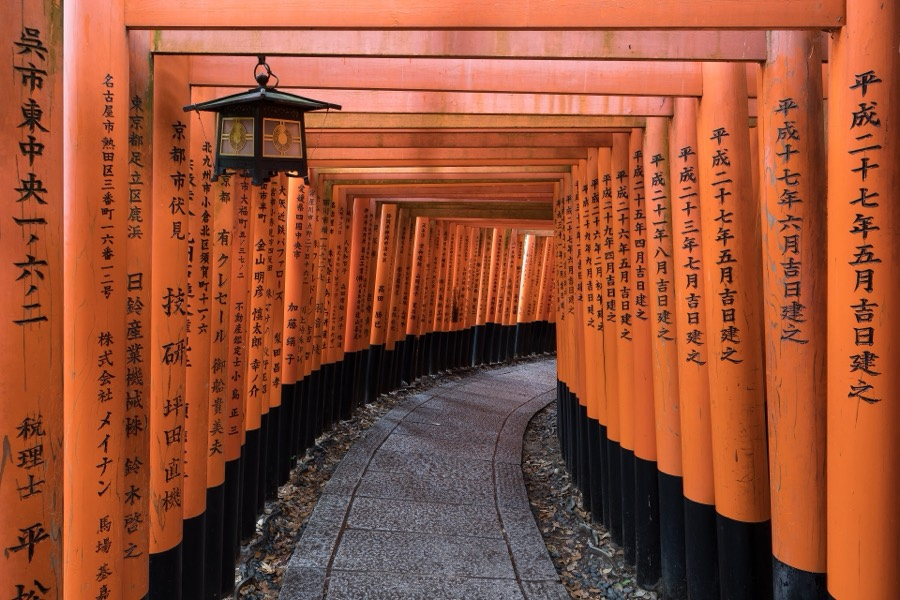
Fushimi InariThe endless tunnels of vermilion torii gates up the hillside — this is that place. (Photo: Wikimedia Commons)
10:15
🚆 To Kiyomizu-dera (Higashiyama)
Back toward your hotel's district. Keihan to
Kiyomizu-Gojō then a walk uphill, or a short taxi (easiest with the 6-year-old in the heat).
🟩 TAP SUICAKeihan + walk, or taxi~20–30 mintaxi ~¥1,500
10:45
🏯 Kiyomizu-dera + Sannenzaka / Ninenzaka lanes
Grand hillside temple with the wooden stage, then the old souvenir/matcha-ice-cream lanes. ⚠️ Cash entry ~¥400–500 (adult) / ~¥200 (child).
 Kiyomizu-deraThe big temple on tall wooden stilts jutting over the hillside — you walk out onto that stage. (Photo: Wikimedia Commons)
Kiyomizu-deraThe big temple on tall wooden stilts jutting over the hillside — you walk out onto that stage. (Photo: Wikimedia Commons)
11:45
📸 Yasaka Pagoda photo — the exact spot
This is
the classic Kyoto shot: the five-storey
Yasaka Pagoda (八坂の塔 / Hōkan-ji temple) framed by the old sloping street. Here's exactly where to stand — the Japanese names are confusing, so follow this:
- STAND HEREOn Yasaka-dōri (八坂通), the sloping stone street — walk down the hill on Yasaka-dōri with the pagoda in front of you. The postcard angle is from the upper (east) end looking down/west, roughly outside the "Rakushо̄ / Starbucks-area" stretch. Point the camera down the slope so the pagoda towers over the street. 📍 Maps: "Yasaka Pagoda" (Hokan-ji), stand on Yasaka-dori just uphill of it
- TIPGet there early — by late morning this one narrow street fills up. You'll pass it naturally walking Kiyomizu → Ninenzaka → Sannenzaka → down toward Gion.
 Yasaka PagodaShot from Yasaka-dōri looking down the slope — this is the exact street & angle. (Photo: Wikimedia Commons)
Yasaka PagodaShot from Yasaka-dōri looking down the slope — this is the exact street & angle. (Photo: Wikimedia Commons) 12:30
🍽️ Lunch near Yasaka / Gion-Shijō (your HappyCow picks)
You come down off Kiyomizu → Ninenzaka → Yasaka into the Gion-Shijō area — eat there.
- VEGUno Yukiko Soy-Milk Ramen — fully vegan ramen (S+E of Gion-Shijō Stn). 📍 Maps: "Uno Yukiko soy milk ramen Kyoto"
- VEGCrunch Salad — salads/bowls, just S of Gion-Shijō Stn. · Bali Bali Indonesia (3F, E+N of stn) — Nasi Lengko / tempeh, veg-friendly.
- SAFEOhagi no Tanbaya — dango / mochi / ohagi bakery (next to Bali Bali); guaranteed kid-win. 📍 Maps: "Ohagi no Tanbaya Gion"
16:00
🏮 Gion stroll (old teahouse district)
⚠️ No photos in the private alleys (fines ~¥10,000). Stay on main streets; don't chase geisha/maiko.
 GionPreserved wooden teahouse lanes (Hanamikoji) — the historic geisha district; atmospheric at dusk. (Photo: Wikimedia Commons)
GionPreserved wooden teahouse lanes (Hanamikoji) — the historic geisha district; atmospheric at dusk. (Photo: Wikimedia Commons)
Optional
Buy🛍️ Salamanca Vintage (Kawaramachi)
Curated vintage / second-hand — your saved pick, "best prices for Chanel bags." Quick browse after Gion; Shijō & Sanjō branches.
Keep Kyoto buys light — you carry all bags to Tokyo Jul 13.
 Salamanca VintageIG @salvntg_kyoto · 📍 Maps: "Salamanca Vintage Kyoto"
Salamanca VintageIG @salvntg_kyoto · 📍 Maps: "Salamanca Vintage Kyoto"Not shopping? Head straight to an early dinner.
18:00
🍽️ Dinner in Kawaramachi / Pontocho (your HappyCow picks)
You're already down at Shijō — eat before heading back up to the hotel.
- VEGChao Chao Gyoza (Shijō-Kawaramachi) — veg gyoza; just off Shijō-dōri (go E, turn right, a little S). 📍 Maps: "Chao Chao Gyoza Kawaramachi"
- VEGHyssop — veg café, 4F of Good Nature Station. 📍 Maps: "Hyssop Good Nature Station"
- SAFE(THIS IS) NATURE — flower-shaped ice-cream cones, 1F near the Shijō-dōri entrance; kids will love it. 📍 Good Nature Station
Reminders: temples close ~16:30–17:00 & are cash-only; take the
train, not the tourist buses; water every 30–60 min.
~20:00
🏨 Back to the Westin (from Kawaramachi/Gion)
Your hotel's home station is
Keage (蹴上) on the
Tōzai subway line — a
2-min covered walk up to the lobby from
Exit 2. From the Shijō-Kawaramachi/Gion dinner area:
- TRAINWalk ~7 min N along the river to Sanjō → enter Sanjō-Keihan Station → take the Tōzai line toward Rokujizō (六地蔵) → get off at Keage (3 stops, ~6 min) → Exit 2, 2-min walk. 🟩 TAP SUICA · ~¥260
- TAXISimplest with tired kids — grab a taxi on Shijō-dōri or Kawaramachi-dōri, say "Westin Miyako Kyoto, Keage". ~15–20 min, ~¥1,500–2,200.
⚠️ Confirm the Tōzai train is heading toward Rokujizō, not Uzumasa-Tenjingawa (opposite direction). Set alarms — Day 3 has an early Arashiyama start.
Day 3 · Thursday
July 9
Arashiyama bamboo + river boat → Osaka afternoon
Sleep: Westin Miyako Kyoto
Carry today: Suica ×4 · Sagano Torokko ticket (if booked) · ~¥20,000 cash (boat + Osaka Castle are cash) · veg card · hats + water · Master Sheet
Day 3 — Thu Jul 9 · Arashiyama + Osaka
Headline: Bamboo grove at dawn → scenic Sagano train up the gorge → Hozugawa river boat back down (the must-do) → then across to Osaka for the Castle + Dōtonbori in the afternoon/evening (the Osaka sights you can't fit on USJ day). A full but flat-paced day.
07:30
🍳 Breakfast at the Westin
Your safe daily base — flag lacto-veg. Eat well; today has an early train and not much guaranteed veg out west.
08:15
🚆 To Saga-Arashiyama
JR
Sagano / San-in Line from Kyoto Station to
Saga-Arashiyama (the bamboo grove is ~10 min walk from there). Or hotel taxi to the JR line. Aim to be walking by ~08:45 while it's still cool and quiet.
🟩 TAP SUICAJR Sagano/San-in Line~20 min~¥240
08:45
🎋 Bamboo Grove + Togetsukyo Bridge
Walk the grove first thing — it's tiny (~5–10 min) and becomes an unbearable crush by mid-morning, so this is why you came early. Then stroll to the Togetsukyo bridge and the riverside.
 Bamboo GroveThe tall green bamboo walking path — short but unmistakable.
Bamboo GroveThe tall green bamboo walking path — short but unmistakable. Togetsukyo BridgeThe wide wooden-railed bridge over the river with the green hills behind. (Photos: Wikimedia Commons)
Togetsukyo BridgeThe wide wooden-railed bridge over the river with the green hills behind. (Photos: Wikimedia Commons)
Optional
Niche · 10 min💇 Mikami Shrine (御髪神社) — the "hair shrine"
Right here in
Sagano, by
Torokko Arashiyama station: Japan's only shrine to the
god of hair & beauty — hairdressers and anyone praying for hair health leave locks of hair as offerings. A quiet little 10-min curiosity if it appeals while you're between the grove and the train.
 Mikami ShrineSmall forest shrine (御髪神社) tucked in Sagano near the Torokko line — the "hair & beauty" shrine. (Photo: your saved reel)
Mikami ShrineSmall forest shrine (御髪神社) tucked in Sagano near the Torokko line — the "hair & beauty" shrine. (Photo: your saved reel)Not interested? Skip straight to the Sagano Torokko below.
09:30
🚂 Sagano Romantic Train (Torokko) UP the gorge
Scenic open-car railway up the gorge. Boards at
Torokko Saga station (right next to JR Saga-Arashiyama); ride up to
Torokko Kameoka.
⚠️ Reserved paper ticket — sells out in peak July, book ahead. If you didn't get seats, the
regular JR Sagano line to Kameoka is the always-works fallback — then walk/shuttle to the boat dock.
🟥 BUY (reserve ahead)Sagano Torokko~25 min~¥880/adult · ~¥440 child
 Sagano TorokkoThe old-fashioned open-sided sightseeing train that trundles along the gorge. (Photo: Wikimedia Commons)
Sagano TorokkoThe old-fashioned open-sided sightseeing train that trundles along the gorge. (Photo: Wikimedia Commons)
10:15
🚌 Torokko Kameoka → Hozugawa boat dock
From Torokko Kameoka, a short
shuttle bus (~15 min, ~¥310) or taxi takes you to the
Hozugawa boat boarding dock (Kameoka Sanban-noriba). Boats are walk-up, first-come — get there in good time so you're on an ~11:00 departure.
Shuttle bus / taxi~15 min
11:00
🚣 Hozugawa River Boat back down to Arashiyama must-do
The highlight of the day — a
~90-min traditional wooden boat ride down the gorge rapids, boatmen poling and steering, back to Arashiyama by the Togetsukyo bridge. Kids love it; genuinely scenic and shaded on the water.
⚠️ Walk-up (no online booking) — arrive by ~10:45. Runs stop in heavy rain (if cancelled, take the Torokko back down instead).
🟥 PAY AT DOCK (cash)Hozugawa Kudari~90 min¥4,100/adult · ¥2,700 child
Info:
hozugawakudari.jp/en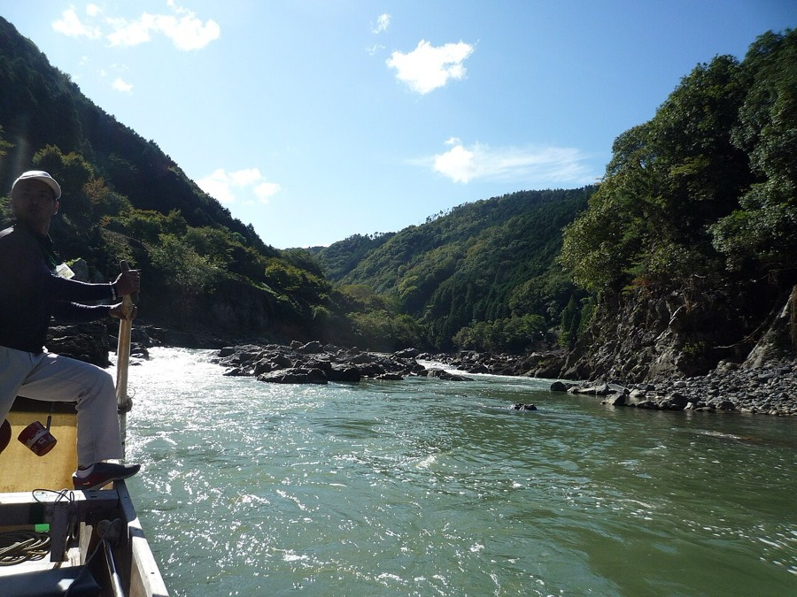
Hozugawa BoatLong flat-bottomed wooden boat, boatmen poling you down the river gorge — this is the "boat ride." (Photo: Wikimedia Commons)
13:00
🍽️ Lunch in Arashiyama (your HappyCow picks)
All on/near the Nakanoshima main street between Randen Arashiyama Stn and the bridge.
- VEGBonBon Soba — Japanese soba, yuba, veg ramen; right by Arashiyama Stn toward the bridge. 📍 Maps: "BonBon Soba Arashiyama"
- VEGSeizan Sodo — 6-course set menu (~¥4,000pp), N of the station; · Gyatei onigiri / soy-meat, N of stn. 📍 Maps: "Seizan Sodo Arashiyama"
- SAFEKumahiko Café (ice cream + coffee, near the boat-ride end) · Arashiyama Yoshiya / Yoshiya yuba — confirm no dashi/egg.
14:00
🚄 Afternoon: over to OSAKA (the sightseeing you can't do on USJ day)
Why now: Jul 10 is a full theme-park day at USJ, so
Osaka's actual city sights (Castle + Dōtonbori) don't fit then — this afternoon is your window. From Arashiyama:
- TRAINSaga-Arashiyama → Osaka — JR Sagano/San-in Line to Kyoto Station (~20 min), then JR Special Rapid Kyoto → Osaka (~30 min). Leave bags/shopping light. 🟩 TAP SUICA · ~¥1,100/adult · ~55 min total
Reality check: this makes Jul 9 a genuinely full day (dawn bamboo + boat + Osaka). It's very doable because the morning ends by ~13:00 and the afternoon is flat city sightseeing — but if the kids are cooked after the river boat, the honest call is to
skip Osaka, ride JR back to Kyoto and rest (old plan: subway to Keage, pool, early dinner near the Westin). Osaka is the bonus, not the backbone.
15:00
🏯 Osaka Castle (Ōsaka-jō)
The great white-and-gold keep in a big moated park — one of Japan's most famous castles and an easy kid win. From Osaka Stn, JR
Osaka Loop Line to
Osakajōkōen (~10 min), then a walk through the park to the tower.
⚠️ Castle-tower entry ~¥600 adult / free under-15s, cash; last entry ~16:30 — or just enjoy the grounds for free.
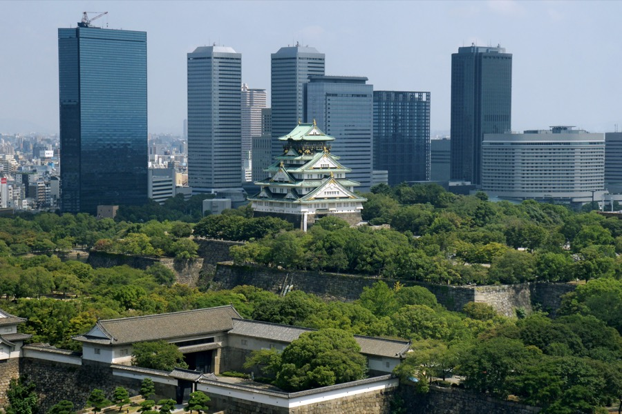
Osaka CastleThe main keep — this is what "Ōsaka-jō" looks like. (Photo: Wikimedia Commons) 17:00
🌃 Dōtonbori + Hozenji Yokocho (Osaka Minami)
The neon canal heart of Osaka — the
Glico running-man sign, giant moving crab, and the buzzy covered arcades. From Osaka Castle, JR Loop to
Morinomiya → subway, or Loop to
Tennōji → Midōsuji line to
Namba (~20 min). Bright, buzzy and kid-safe in the early evening.
- SEEDōtonbori canal + Glico sign — the classic Osaka night photo, right on the water. 📍 Maps: "Dotonbori Glico Sign"
- SEEHozenji Yokocho — a tiny stone-paved lantern alley 2 min off the canal; splash the moss-covered Hōzen-ji statue for luck. 📍 Maps: "Hozenji Yokocho"
 DōtonboriThe neon canal — the Glico sign is the photo everyone takes. (Photo: Wikimedia Commons)
DōtonboriThe neon canal — the Glico sign is the photo everyone takes. (Photo: Wikimedia Commons) — come for the sights, do a proper veg dinner below.
18:30
🍽️ Veg dinner in Osaka (Namba / Shinsaibashi)
Namba has more reliable veg than the canal itself. Reconfirm on Maps the morning-of (small places move):
- VEGPaprika Shokudō Vegan — long-running all-vegan Japanese diner (set meals, karaage-style soy, curry), a short walk from Namba/Shinsaibashi. 📍 Maps: "Paprika Shokudo Vegan Osaka"
- VEGCoCo Ichibanya (veg curry roux) — chain, kid-proof; ask specifically for the vegetarian roux. Branches around Namba. 📍 Maps: "CoCo Ichibanya Namba"
- SAFENamba depachika / konbini — Takashimaya food hall + konbini for guaranteed kid snacks (inarizushi, fruit, melon pan).
~20:00
🏨 Osaka → Kyoto → up to the Westin
Head back to Kyoto.
⚠️ The free hotel shuttle has stopped for the night — use the subway or a taxi at the Kyoto end (same as USJ day):
- TRAINNamba/Osaka → Kyoto → Keage — JR Special Rapid Osaka → Kyoto Station (~30 min); then Karasuma subway → Karasuma-Oike, transfer to Tōzai line toward Rokujizō → Keage (蹴上), Exit 2, 2-min walk up. 🟩 TAP SUICA · ~¥1,100 total
- TAXIFrom Kyoto Station with wiped-out kids — say "Westin Miyako Kyoto, Keage", ~15 min, ~¥1,800–2,500.
Aim to be on a train out of Osaka by ~21:00 so you're not fighting last-train timing with tired kids. Early night — the USJ marathon is tomorrow.
Day 4 · Friday
July 10
Universal Studios Japan (Osaka)
Sleep: Westin Miyako Kyoto
Carry today: Suica ×4 · Studio Pass + Express Pass (pre-bought) · USJ app w/ payment set up · power bank · konbini snacks · veg card · Master Sheet
Day 4 — Fri Jul 10 · USJ 🎢 (dated tickets)
Headline: Big theme-park day trip to Osaka. This one needs early start + pre-bought tickets + a plan for Nintendo World.
06:15
🍳 Early breakfast + pack konbini snacks
Grab kid fuel for ride queues at any 7-Eleven/Lawson — veg options are thin inside the park.
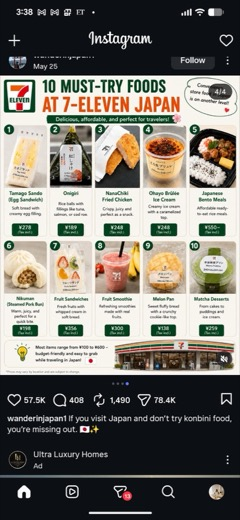
7-ElevenMelon pan, fruit sando, matcha sweets.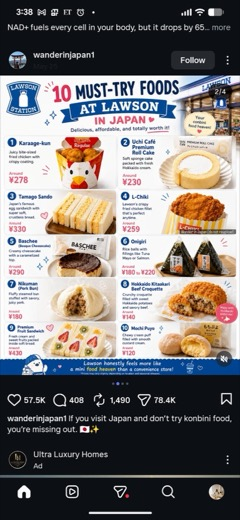
LawsonRoll cake, Baschee, fruit sando, Mochi Puyo. 06:45
🚆 To USJ: Kyoto → Osaka → Universal City
JR from
Kyoto Station to
Osaka Station (Special Rapid, ~30 min), then the
JR Yumesaki (Sakurajima) Line to
Universal-City station — the park is a 5-min walk. Google Maps shows the exact platform live.
Set up the USJ app with payment BEFORE you arrive.
🟩 TAP SUICAJR Kyoto→Osaka→Universal-City~75–90 min~¥1,200/adult
08:00
🎢 At the gate before official open
First move: rope-drop Super Nintendo World (+ Donkey Kong Country). ⚠️ Needs a timed-entry ticket that vanishes by mid-morning unless your Express Pass includes it (Part 8).
Morning
📏 Mind the height limits
⚠️ ~102 cm for Nintendo rides, 117 cm for big coasters — measure the 6-year-old at home. Indoor rides (Minion, Harry Potter) double as A/C breaks. Empty pockets before big rides — lockers are mandatory and strict.
11:30
🍽️ Lunch inside USJ (your picks — mobile-order early)
Mobile-order in the app early — 11:30 slots are gone by 10:00.
- VEGThree Broomsticks — vegetable Irish stew (Harry Potter area). · Kinopio's Café (Nintendo World) — spaghetti + meat-free "meatballs", pizza; reservation/timed-entry needed.
- VEGAzzurra di Capri — pizza. Confirm no meat/fish in sauces.
- SAFEYour packed konbini snacks — the guaranteed backup for the kids.
~17:30
🍽️ EARLY dinner as you EXIT — at Universal CityWalk
Eat BEFORE you board. CityWalk is the mall you walk through to reach the station — feed everyone here so the trip home is pure logistics.
Osaka Station is just your transfer (change platforms, no food-hunting with tired kids), then straight to Kyoto.
- SAFEUniversal CityWalk casual spots — pizza / pasta / crêpes / ice-cream; or re-use a lunch pick (Azzurra di Capri) for an early bite. Show the veg card. 📍 Maps: "Universal CityWalk Osaka"
- SAFEGrab-and-go for the train — konbini onigiri/fruit at Universal-City Stn if kids fade later.
Default plan: eat here, skip Umeda, head home to Kyoto. But if everyone still has energy, the optional Minami loop below is right there on the way.
Optional · eve
Only if you skipped Jul 9🌃 Dōtonbori + Hozenji Yokocho (Osaka Minami)
You've likely already done Osaka on Jul 9 (Castle + Dōtonbori) — so treat this as a fallback only if the Jul 9 Osaka afternoon got cut. If so, and the kids somehow still have gas: from Universal-City, JR to
Nishikujo → Hanshin/subway to
Namba (~25–30 min).
- SEEDōtonbori — the canal, Glico running-man sign, giant crab; the classic Osaka night photo.
- SEEHozenji Yokocho + Shinsekai/Tsūtenkaku — lantern alley and retro-neon district, only if fresh.
⚠️ Reality check: this is a full theme-park day already. If you already saw Osaka on Jul 9, just go home. Dōtonbori food is mostly meat/takoyaki — sights, not dinner.
Already did Osaka Jul 9 / kids melting? Skip entirely — straight back to Kyoto from Universal-City.
Getting home
🏨 Kyoto Station → the Westin (evening — no shuttle late)
You arrive back at
Kyoto Station from Osaka/USJ.
⚠️ The free hotel shuttle stops running in the evening (last departure ~18:00–19:00 — check the board), so at night use:
- TRAINSubway to Keage — Karasuma line from Kyoto Station → Karasuma-Oike (2 stops) → transfer to Tōzai line toward Rokujizō → Keage (蹴上), Exit 2, 2-min walk up to the lobby. ~15–20 min total. 🟩 TAP SUICA · ~¥260
- TAXIFastest with wiped-out kids — taxi rank at the Hachijō (south) or Karasuma (central) exit; say "Westin Miyako Kyoto, Keage". ~15 min, ~¥1,800–2,500.
Book now (Part 7): Studio Pass + Express Pass, online only.
Day 5 · Saturday
July 11
Nara — deer, Great Buddha, lanterns & old town
Sleep: Westin Miyako Kyoto
Carry today: Suica ×4 · ~¥10,000 cash (Todai-ji + Kasuga entries) · veg card · hats + water · Master Sheet · no bookings needed today
Day 5 — Sat Jul 11 · Nara day trip 🦌
Headline: All walk-up, no bookings — an easy, joyful full day. Deer → Great Buddha → Kasuga Taisha lanterns → Naramachi old town + a garden. A relaxed pace but with a real afternoon, not a 4pm retreat to the hotel.
08:00
🍳 Relaxed breakfast
No bookings today, so no rush. Sleep in a little after yesterday's USJ marathon.
09:30
🚆 To Nara
From
Kyoto Station: JR
Nara Line rapid to
Nara, or
Kintetsu to
Kintetsu-Nara (closer to the deer park; Kintetsu has its own gates on the south/Hachijō side). No advance booking — just tap and go.
🟩 TAP SUICAJR Nara Line / Kintetsu~45 min~¥720 JR · ~¥640 Kintetsu
10:30
🦌 Nara Park — free-roaming deer
⚠️ Deer safety: keep crackers hidden until ready, feed fast, then show empty open hands. Don't let the 6-year-old wave a stack around — they head-butt. They're calmer after ~13:00.
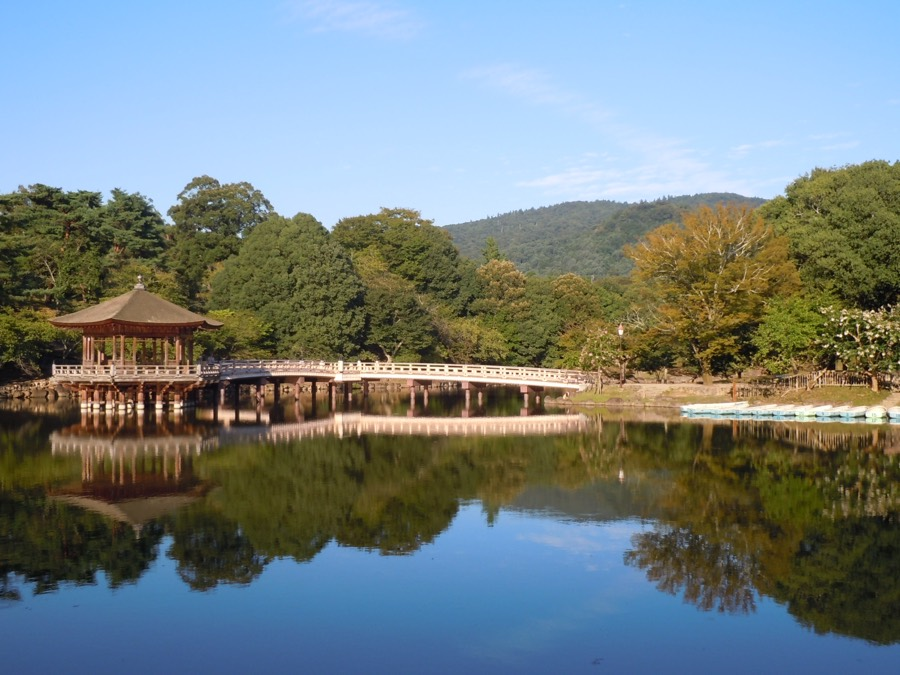
Nara ParkTame deer wandering the open park — the kids can feed them special crackers. (Photo: Wikimedia Commons)
11:30
🛕 Todai-ji — the Great Buddha hall
¥600 adult / ¥300 child, cash. One of Japan's great sights and easy for kids.
 Tōdai-jiThe enormous wooden hall housing a giant bronze Buddha — a short walk uphill through the deer park. (Photo: Wikimedia Commons)
Tōdai-jiThe enormous wooden hall housing a giant bronze Buddha — a short walk uphill through the deer park. (Photo: Wikimedia Commons)
13:00
🍽️ Lunch near Kintetsu-Nara / Higashimuki arcade (your picks)
All on Higashimuki shopping street, 2 min from the park & Todaiji.
- VEGZagin Kintetsu-Nara — vegan ramen (down the road S from the station). 📍 Maps: "Zagin Kintetsu Nara"
- VEGChina Dining Hiten — veg options (fried rice, stir-fried soy). · Cafe Groovy — vegan spaghetti, further S on Higashimuki. 📍 Maps: "Cafe Groovy Nara"
14:00
🏮 Kasuga Taisha — the lantern shrine
What it is: Nara's most important shrine, at the far (east) end of the deer park. It's famous for its
~3,000 lanterns — hundreds of moss-covered
stone lanterns lining the forest approach, plus rows of
bronze hanging lanterns along the vermilion shrine buildings. The forest walk in to it is half the charm (you'll pass more deer). ~15-min walk uphill from Todai-ji, or a short bus.
- SEEStone-lantern forest path — free to walk the wooded approach lined with lanterns. 📍 Maps: "Kasuga Taisha"
- TIPInner hall (bronze lantern corridor) — small paid area (~¥500 cash) if you want the dark lantern hall; the free outer paths already give you the iconic look.
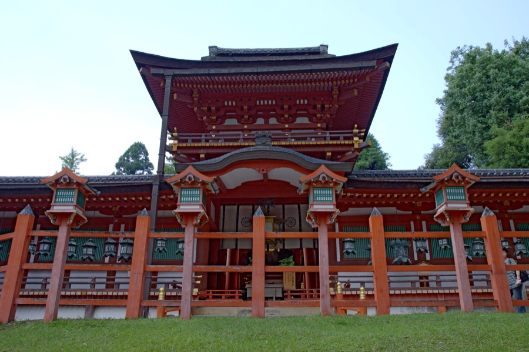
Kasuga TaishaThe hanging bronze lanterns along the shrine — plus stone lanterns line the forest path in. (Photo: Wikimedia Commons)
15:15
🍵 Naramachi old town + a garden (fills the afternoon)
Instead of heading back at 4pm, wander
Naramachi (ならまち) — the lattice-fronted former merchant quarter just south of the park: traditional machiya townhouses, craft shops, cafés, and the little
"sleeping cat" lanes. Add a cool-down garden if everyone's game:
- SEENaramachi lanes — free to stroll; kid-friendly craft/sweet shops, mochi pounding demos nearby. 📍 Maps: "Naramachi"
- SEEIsuien Garden or Yoshikien Garden — beautiful strolling gardens between Todai-ji and Naramachi (Yoshikien is free for foreign visitors). A shady 30–40 min. 📍 Maps: "Isuien Garden Nara"
- SAFENakatanidou — famous high-speed mochi-pounding shop near Higashimuki; fresh yomogi mochi, a guaranteed kid-win. 📍 Maps: "Nakatanidou"
This is your buffer day — you now have a full afternoon, but everything here is optional and flat. If anyone's genuinely wiped, cut it and head back; nothing is time-critical.
16:30
🍨 Snack / early bite in Naramachi before the train
Regroup with a cold drink and a sweet before the ride home (dinner is back near the Westin):
- VEGCafe/teahouse in Naramachi — matcha, warabi-mochi, kakigōri (shaved ice) in the old-town cafés. Reconfirm no-egg on baked items. 📍 Maps: "Naramachi cafe"
- SAFEHigashimuki arcade konbini — grab-and-go for the train if the kids fade.
17:30
🚆 Train back to Kyoto → up to the Westin
Reverse of the morning — JR or Kintetsu, tap Suica, back to
Kyoto Station (~45 min). Then up to the hotel (home station =
Keage on the Tōzai line, Exit 2, 2-min walk):
- SHUTTLEFree Westin shuttle — only if you're back by ~18:00–19:00 (check the board). Board at the Hachijō (south) exit, white bus, :10/:40 past the hour, ~25 min.
- TRAINSubway if later — Karasuma line → Karasuma-Oike, transfer to Tōzai line toward Rokujizō → Keage. ~15–20 min. 🟩 TAP SUICA · ~¥260
- TAXIEasiest with tired kids — "Westin Miyako Kyoto, Keage", ~15 min, ~¥1,800–2,500.
This is your buffer day — if anyone's wiped, cut it to a half-day and rest.
18:30
🍽️ Relaxed dinner near the Westin
Your
near-Westin picks, a short walk from the hotel:
- VEGJunsei (8-min NE) · Oshokuji-dokoro Asuka (7-min W) · Okutan Nanzen-ji (13-min) · Beer Komachi (near Higashiyama Stn). 📍 Maps: "Junsei Kyoto"
Nothing demanding tomorrow morning — Day 6 is your gentle Kyoto wind-down.
Day 6 · Sunday
July 12
Golden Pavilion + Nijō Castle → last Kyoto sights
Sleep: Westin Miyako Kyoto
Carry today: Suica ×4 · ~¥12,000 cash (Kinkaku-ji + Nijō entries) · veg card · Master Sheet · tonight: pack tight + reserve Jul 13 oversized-baggage seats on Smart-EX
Day 6 — Sun Jul 12 · Golden Pavilion, Nijō Castle & last Kyoto sights
Headline: Your last full Kyoto day — knock out the two big remaining "must-see" sights (Kinkaku-ji + Nijō Castle) in the morning, a downtown lunch, then an easy afternoon of your choice. You carry all bags on the train tomorrow, so tonight's non-negotiable job is packing tight (see the Day 7 luggage note) — that's why the late afternoon stays flexible.
09:00
🏯 Kinkaku-ji (Golden Pavilion) — go first, go early
What it is: a Zen temple whose top two floors are
completely covered in gold leaf, mirrored in the pond in front — arguably the single most dazzling sight in Kyoto and an instant kid "wow." It's a
one-way garden stroll (~30–40 min), not a climb, so it's easy with the 6-year-old. Go early — it's packed by mid-morning. NW Kyoto; easiest =
taxi from the Westin (~25 min), or subway + bus.
🟩 TAP SUICA / TAXI~25–30 min from Westin¥500 cash entry
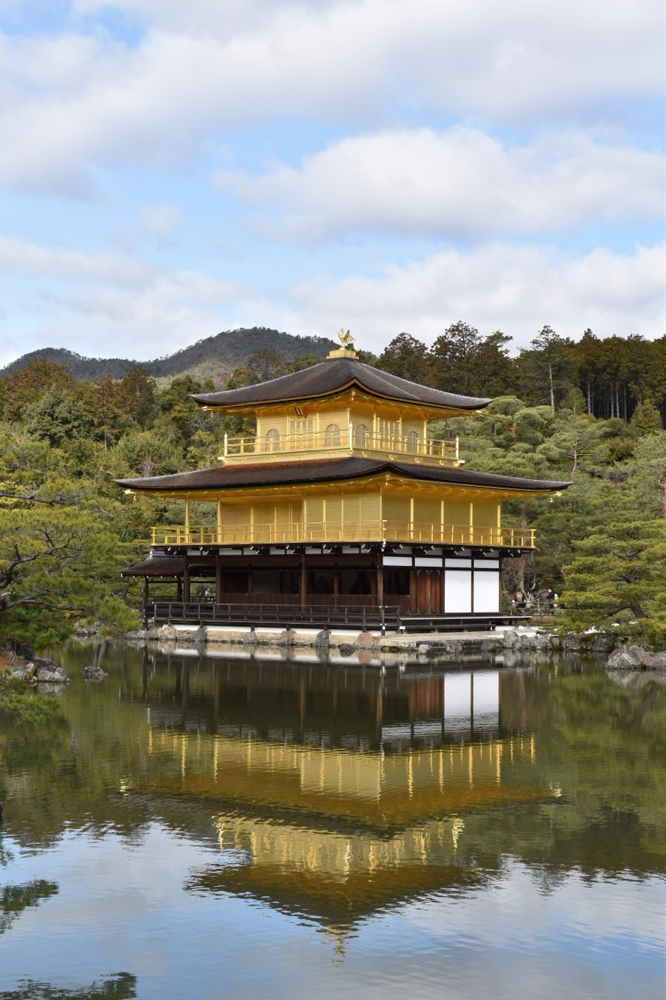
Kinkaku-jiThe gold-leaf pavilion over its mirror pond — this is "Golden Pavilion." (Photo: Wikimedia Commons)
10:45
🏯 Nijō Castle — the shogun's palace (pairs with Kinkaku-ji)
What it is: the
Kyoto castle-palace of the Tokugawa shogun — not a tall keep but a sprawling moated compound with lavish painted screens and the famous
"nightingale floors" that chirp when you walk (built to detect intruders — kids love testing them). It's a flat walk-through between Kinkaku-ji and downtown, so it slots in naturally.
⚠️ ~¥1,300 adult / cheaper kids, cash; last entry ~16:00.
🟩 TAP SUICA / TAXI~15 min from Kinkaku-ji~¥1,300 adult
 Nijō CastleThe Ninomaru Palace — long low buildings with painted screens & nightingale floors. (Photo: Wikimedia Commons)
Nijō CastleThe Ninomaru Palace — long low buildings with painted screens & nightingale floors. (Photo: Wikimedia Commons)
Optional
Only if not done🎋 Arashiyama — if you somehow skipped Jul 9
You already did
Arashiyama on Jul 9 (bamboo grove + river boat), so you can skip this. It's only here as a catch-up if Day 3 got rained out. It's the green NW district — the
bamboo grove, Togetsukyo bridge, and riverside.
ArashiyamaThe bamboo grove — NW Kyoto's green district (already on your Jul 9). (Photo: Wikimedia Commons) Already did Jul 9? Skip — do Kinkaku-ji + Nijō above instead.
Optional · kids
Kid-first swap🥷 Toei Kyoto Studio Park
If the kids would rather have a fun day than a second temple,
swap Nijō Castle for this — a samurai/ninja film-set park with costumes, ninja shows, and a haunted house. A genuine hit for a 6-year-old. Half-day, west Kyoto (near Kinkaku-ji's side of town). JR Sagano Line to
Uzumasa or a taxi.
🟩 TAP SUICAJR Sagano → Uzumasa, or taxi~30 min
toei-eigamura.com ·
📍 Maps: "Toei Kyoto Studio Park"
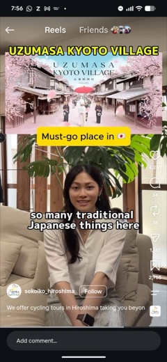
Toei Studio ParkYour saved pick — very "old Japan," great for kids.Prefer the classic sight? Stick with Kinkaku-ji above and skip this.
12:30
🍽️ Lunch — Nishiki east end / Shijō-Kawaramachi (your picks)
Nishiki's east end runs right into Shijō-Kawaramachi — the same cluster as your Day 2 picks:
- VEGChao Chao Gyoza (veg gyoza, off Shijō-dōri) · Hyssop (veg café, 4F Good Nature Station). 📍 Maps: "Good Nature Station Kyoto"
- SAFENishiki Market grazing — yuba, tofu doughnuts, matcha sweets, soy-milk (check no-bonito). · (THIS IS) NATURE flower ice-cream cones.
14:00 · pick one
Fill the afternoon🍵 One last easy Kyoto thing (all near the hotel side)
You're downtown after lunch with a few hours before packing — do
one calm thing rather than heading straight back:
- SEEGinkaku-ji (Silver Pavilion) + Philosopher's Path — the serene counterpart to Kinkaku-ji, plus the pretty canal walk; close to the Westin's side of town. 📍 Maps: "Ginkaku-ji"
- SEEHeian Shrine + garden — giant orange torii, big plaza, a short taxi from the hotel; low-effort and photogenic. 📍 Maps: "Heian Shrine"
- SEE💄 Kawai Shrine (beauty shrine) — in the Shimogamo Shrine forest (~5-min walk from Demachiyanagi Stn, Keihan line, N of downtown). Famous for face-shaped "beautiful face" ema you decorate with your own cosmetics; pairs with a cool Kamo-river / Shimogamo forest stroll. 📍 Maps: "Kawai Shrine Kyoto"
- SHOPNishiki Market + Teramachi/Shinkyōgoku arcades — last light Kyoto souvenir grazing (keep it small — you carry all bags tomorrow). 📍 Maps: "Nishiki Market"
⚠️ Keep purchases light — everything you buy today gets wheeled onto the Shinkansen tomorrow.
 Kawai ShrineThe "beauty" shrine in the Shimogamo forest — you decorate a face-shaped ema with your own cosmetics. (Photo: your saved reel)
Kawai ShrineThe "beauty" shrine in the Shimogamo forest — you decorate a face-shaped ema with your own cosmetics. (Photo: your saved reel)Everyone tired / want to swim + pack? Skip and head back now — the onsen/pool option is below.
16:30
🚆 Back to the Westin (from Shijō-Kawaramachi / Nishiki / Higashiyama)
Home station =
Keage (蹴上),
Tōzai line, Exit 2, 2-min walk up. From the Nishiki/Shijō-Kawaramachi cluster:
- TRAINWalk ~7 min N to Sanjō → Sanjō-Keihan → Tōzai line toward Rokujizō (六地蔵) → Keage (3 stops, ~6 min). 🟩 TAP SUICA · ~¥260 ⚠️ toward Rokujizō, not Uzumasa-Tenjingawa.
- TAXIWith kids + any bags — "Westin Miyako Kyoto, Keage", ~15 min, ~¥1,500–2,200.
Optional
Add-on♨️ Westin onsen this afternoon
⚠️ Brief the kids on onsen rules — wash first, no swimwear (Part 8).
Skip the onsen? Pool + pack the carry-alongs instead.
18:30
🍽️ Farewell-to-Kyoto veg dinner near the Westin
Your
near-Westin picks — or splurge on the shōjin send-off:
- VEGJunsei / Okutan Nanzen-ji — a proper yudōfu farewell (confirm kombu-only broth). 📍 Maps: "Okutan Nanzenji"
- VEGOshokuji-dokoro Asuka (7-min W) · Beer Komachi (casual) · or concierge-booked shōjin ryōri for the special temple-veg send-off.
Tonight's jobs: pack tight (you wheel everything onto the Shinkansen tomorrow),
reserve the oversized-baggage seats on Smart-EX for the Jul 13 Nozomi (see Day 7), confirm the train, charge everything.
Day 7 · Monday
July 13
Kyoto → Tokyo (JW Marriott)
Sleep: JW Marriott Tokyo
Carry today: all 4 passports · Smart-EX QR w/ oversized-baggage seats reserved · Suica ×4 · all luggage · veg card · Master Sheet
Day 7 — Mon Jul 13 · Move to Tokyo 🚄
Headline: The full-luggage transfer. You're wheeling all 4 bags onto the Nozomi, so the one thing that matters is reserving the right seats (below). You get off at Shinagawa, not Tokyo Station.
🧳 Book the oversized-baggage seats. Any suitcase where length + width + height is 161–250 cm (most large check-in bags) needs a "特大荷物スペースつき座席 / Oversized Baggage Seat" on the Nozomi — it's the last row of the car, with locking storage space behind it, at no extra charge if reserved in advance. Book these on Smart-EX when you reserve. ⚠️ Board without one and it's a ¥1,000/bag penalty + no guaranteed space. Bags under 160 cm total need no reservation (overhead rack / at your feet). Full rule + photo in Part 3.
08:30
🍳 Relaxed breakfast + final pack
No need to rush — trains are frequent. Checkout when ready (Westin holds bags if needed). Double-check nothing's left in the room safe.
11:15
🚌 Westin shuttle → Kyoto Station (with all bags)
Take the hotel shuttle from the lobby (free, :10/:40, ~15 min). At Kyoto Station, follow blue
Shinkansen signs to the
central Shinkansen gates — use lifts/escalators with the bags, not stairs. Grab platform
ekiben/veg snacks before boarding.
Give yourself margin — 4 bags + a 6-year-old through a station is slow.
Free shuttle · no booking~15 minSatellite Concierge in-station can help
12:30
🚄 Nozomi → alight at SHINAGAWA
Sit in your reserved
oversized-baggage row (bags lock behind the last row).
Fuji on the left (seats D/E) going this way, if clear. Line up on your painted car-number mark ~10 min early.
Get off at Shinagawa (the stop before Tokyo Station) — the Shinkansen doesn't stop at Takanawa Gateway, and Shinagawa skips the Tokyo-Station maze.
🟥 BUY (Smart-EX)Tokaido Shinkansen NOZOMI~2h15m~¥13,960/adult
14:50
🚕 Shinagawa → JW Marriott → DROP BAGS + check in
With 4 bags,
take a taxi from the Shinagawa Takanawa-gate/West-exit rank (~5 min) — easiest with luggage.
(Travelling light you'd just hop the Yamanote ONE stop Shinagawa → Takanawa Gateway, which walk-connects to the hotel in 1 min — but with 4 cases, taxi.) Titanium — ask about the upgrade/lounge.
Drop the bags, check in, THEN go eat — don't drag luggage to lunch.
Taxi (easiest w/ bags)~5 min¥1,000–1,500
15:30
🍽️ Late lunch near the JW (bags already dropped)
Hands-free now — eat within a few min of the hotel / Takanawa Gateway.
- VEGEqual Café — Buddha bowls, vegan curry, ice cream; 5F of NEWoMan Takanawa, right behind the JW. 📍 Maps: "Equal Cafe NEWoMan Takanawa"
- VEGObica Mozzarella Bar — Italian/cheese-forward, by the Shinagawa Prince Hotel. 📍 Maps: "Obica Takanawa"
- SAFEEkiben on the train — if kids can't wait, eat the plain-onigiri/fruit ekiben en route and just settle in.
Optional
Buy · easy + indoor🛍️ Ginza run — Uniqlo/MUJI + electronics + watches
A gentle first-evening errand if everyone's rested — all A/C, one short train (Shinagawa → Shinbashi/Ginza).
You're not moving hotels again, so heavy stuff is fine from here on.
- HOMEUniqlo Ginza (12 floors) · MUJI Ginza · GU — Japan-exclusive lines, tax-free w/ passport. 📍 Maps: "Uniqlo Ginza"
- TECHBic Camera Yūrakuchō — Sony cameras/headphones, Nintendo Switch, Seiko/Casio/Citizen watches, tax-free counter. ⚠️ confirm 100–240V dual-voltage. 📍 Maps: "Bic Camera Yurakucho"
- TECHGinza Sony Park — Sony's own experiential showroom building (reopened Jan 2025), 5 min from Uniqlo Ginza. Free to wander; ever-changing exhibits + a café. Hours ~11:00–19:00. sonypark.com 📍 Maps: "Ginza Sony Park"
- WATCHGrand Seiko Flagship Boutique — Japan's largest GS boutique, on Ginza Namiki St (6-6-5 Ginza). Mon–Sat 11:00–20:00 / Sun & hols 11:00–19:00. ⚠️ high-end — browsing welcome; a real destination if a GS is on the wishlist. 📍 Maps: "Grand Seiko Boutique Ginza Namiki"
Too tired first night? Skip — the big shopping day is Jul 16. Go straight to dinner.
18:30
🍽️ Gentle first Tokyo dinner near the JW
Your
near-JW picks (Takanawa Gateway / Shinagawa Takanawa-gate side — reused on quiet Tokyo nights):
- VEGObica Mozzarella Bar — near the Shinagawa Prince Hotel; cheese/Italian, veg-friendly. 📍 Maps: "Obica Takanawa"
- VEGEqual Café (NEWoMan, behind JW) — if not used at lunch. · Green Market MOA — grocery/deli for a light in-room night, E of Obica.
- SAFENatural Café Tabunoki — ⚠️ veg options unclear & hours erratic — call/check Maps before going; treat as a maybe, not a plan.
Day 8 · Tuesday
July 14
Tokyo — Asakusa & Shibuya
Sleep: JW Marriott Tokyo
Carry today: Suica ×4 · passport (tax-free shopping) · veg card · hats + water · Master Sheet · stand LEFT on Tokyo escalators
Day 8 — Tue Jul 14 · Tokyo classics
Headline: Old Tokyo in the morning, iconic modern Tokyo in the evening — with a big A/C break between.
07:30
🍳 Breakfast → early start
Get to Asakusa before the crowds and heat build.
08:00
🚆 To Asakusa
From Shinagawa/Takanawa Gateway: JR to a transfer, then the
Ginza subway line to
Asakusa — Google Maps shows the live platform + best route. Go early.
🟩 TAP SUICAJR + Ginza line~40 min~¥400
08:30
🏮 Asakusa & Senso-ji + Nakamise street
Tokyo's great old temple + its souvenir/snack street. Go early — by late morning it's packed and hot. Add-ons right here: Kappabashi Kitchen Town (plastic food, knives) and Hanayashiki retro amusement park for the 6-year-old.
 Sensō-ji (Asakusa)The big red temple gate + lantern and the shop-lined Nakamise street leading up to it. (Photo: Wikimedia Commons)
Sensō-ji (Asakusa)The big red temple gate + lantern and the shop-lined Nakamise street leading up to it. (Photo: Wikimedia Commons)
Optional
Add-on🗼 Tokyo Skytree
Right nearby — observation decks with big city views.
 Tokyo SkytreeThe tall lattice broadcast tower (world's tallest tower) — glass observation decks near the top. (Photo: Wikimedia Commons)
Tokyo SkytreeThe tall lattice broadcast tower (world's tallest tower) — glass observation decks near the top. (Photo: Wikimedia Commons)Skip the tower? Head to the A/C lunch break.
Optional · 15 min
Luck detour💰 Koami Shrine (小網神社) — the "money-washing" shrine
A tiny, atmospheric good-fortune shrine in
Nihonbashi — people
wash their money in the spring for prosperity, and it's known for warding off misfortune. An easy 15-min detour on the way between Asakusa and Shibuya (
Ningyōchō / Kayabachō Stn, Hibiya line). Often a short queue — go early if you want a photo.
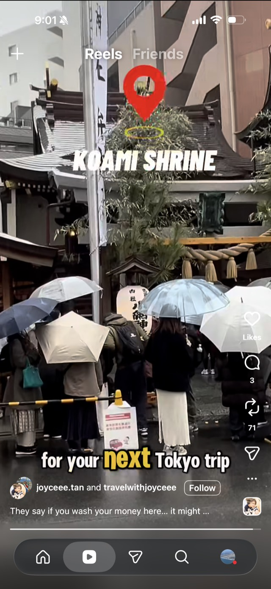
Koami ShrineSmall ornate shrine (小網神社) in Nihonbashi — the money-washing good-luck spot. (Photo: your saved reel)Not detouring? Carry on to the A/C lunch + Shibuya below.
12:30
🍽️ Lunch in Asakusa (before the A/C break)
Eat around Senso-ji / the station before the midday heat peaks.
- VEGYoroiya — vegan ramen & gyoza, near Senso-ji. 📍 Maps: "Yoroiya Asakusa"
- VEGHatoya's — top-rated vegan fruit sandwiches (unique, kid-friendly). · Injoy Etsunou — vegan, just E of the station. 📍 Maps: "Hatoya Asakusa"
- VEGVeganic to go / Monkey Magic — N side. ⚠️ reservation needed — call ahead or treat as a maybe.
Optional
A/C pick🎨 Museum / depachika A/C break
A cool indoor refuge for the hot part of the day. TeamLab Planets is on the dedicated Jul 16 day (wife + kids) — don't double-book it here. Any department-store depachika or a nearby museum works as today's A/C break.
Kids still fresh? Push straight on to Shibuya at dusk.
16:00
🚆 To Shibuya
From Asakusa: Ginza line + transfer, or JR — Maps shows the live route. Aim to arrive at dusk for the lights.
🟩 TAP SUICAsubway / JR~35–45 min~¥300
16:30
🌆 Shibuya — Scramble Crossing & Hachiko
Bright, buzzy, kid-friendly at dusk. Shibuya Sky for sunset views (⚠️ book ahead). Shibuya is also drugstore + secondhand-luxury central — the errands below fit right here.
 Shibuya CrossingThe giant neon-lit intersection where crowds cross from every direction at once. (Photo: Wikimedia Commons)
Shibuya CrossingThe giant neon-lit intersection where crowds cross from every direction at once. (Photo: Wikimedia Commons)
Optional
Buy🛍️ Shibuya shopping run
Tax-free with passport (¥5,000 min pre-tax).
This is a big shopping-city day — heavy stuff is fine now, you're not moving hotels again.
- KIDSNintendo TOKYO + Pokémon Center Shibuya — both on the 6th floor of Shibuya PARCO (5-min walk from the crossing), 10:00–21:00. Japan's first official Nintendo store + a full Pokémon Center side by side — the big win for your 6-year-old. ⚠️ can be crowded weekends/holidays; numbered-entry tickets issued at peak — go earlier if it's mobbed. nintendo.co.jp/officialstore 📍 Maps: "Shibuya PARCO"
- SKINMatsukiyo / Ainz & Tulpe / Don Quijote — your full skincare + haircare list (Melano CC, Hada Labo, Fino, etc.). Bring the shelf photos.
- LUXKomehyo / 2nd Street — pre-loved Chanel/LV bags & watches, authenticated. 📍 Maps: "Komehyo Shibuya"
- EYEBlue Elephant — your saved eyewear brand (Shinjuku/Harajuku flagships). blueelephant.co
- HOMELoft / Hands Shibuya — cosmetics, stationery, travel goods, gifts.
 DrugstoresMatsukiyo / Ainz&Tulpe / @cosme.
DrugstoresMatsukiyo / Ainz&Tulpe / @cosme. Komehyo / 2nd StPre-loved bags & watches.
Komehyo / 2nd StPre-loved bags & watches. Blue ElephantEyewear.
Blue ElephantEyewear.Not shopping tonight? Save it for the Jul 16 shopping afternoon and go to dinner.
19:00
🍽️ Dinner in Shibuya (Hachikō / Center-Gai side)
- VEGGyumon Shibuya (Center-Gai) — vegan ramen + tofu burger (also serves halal wagyu — order the veg items). 📍 Maps: "Gyumon Shibuya"
- VEGCARVAAN Delicatessen — veg wraps & mezze. 📍 Maps: "CARVAAN Shibuya"
- INDMilan Nataraj — Indian veg, a little N of the crossing. 📍 Maps: "Milan Nataraj Shibuya"
Reminders: stand
left on Tokyo escalators; carry your rubbish; live location on in crowds.
Day 9 · Wednesday
July 15
Tokyo DisneySea 🌊 · your son's 7th birthday 🎂
Sleep: JW Marriott Tokyo
Carry today: Suica ×4 · DisneySea tickets dated JUL 15 (on phones) · Tokyo Disney app w/ payment · 10,000mAh power bank · packed snacks · veg card · Master Sheet
Day 9 — Wed Jul 15 · DisneySea 🎂 (birthday + dated tickets)
Headline: The big magical one — and it's the birthday. Date-locked ticket (make sure it's dated Jul 15), app-driven, rope-drop early. Fantasy Springs (Frozen / Rapunzel / Peter Pan, opened 2024) is the newest and most birthday-worthy land. Read the DisneySea gotchas (Part 8) the night before.
🎂 First
🎈 Make it his birthday — free celebration badge
At the entrance (or any shop / cast member), say "It's my son's birthday today" — they give a free "Happy Birthday" sticker/badge and write his name on it. Cast members and characters all over the park then wish him "Happy Birthday!" all day. Nice touches: a birthday-ear headband from any merch shop; and if you pre-booked a table-service restaurant (Ristorante di Canaletto / Magellan's), ask for a small birthday dessert plate when you reserve.
06:30
🍳 Early breakfast + battery check
🔋 The Disney app kills your battery — carry a 10,000 mAh power bank. Pack snacks (kids reject the themed-restaurant meat dishes).
07:00
🚆 JW → Maihama → Disney Resort Line
Shinagawa/Tokyo Stn →
JR Keiyō Line to
Maihama, then the
Disney Resort Line monorail to DisneySea.
⚠️ The Keiyō-line platform at Tokyo Station is a ~10-min walk from the main concourse — pad time.
Not central Tokyo (it's in Urayasu). Leave early to rope-drop.
🟩 TAP SUICAJR Keiyō → Maihama → monorail60–90 min~¥400 JR + ¥260 monorail
08:15
🎟️ At the gate (08:15–08:45)
The moment you scan in, open the Tokyo Disney app and buy Fantasy Springs / Frozen DPA first — it sells out by ~09:30–10:00. The app won't let you buy before you're scanned in. This is the birthday headliner — grab it first.
Morning
📱 Work the 3 pass systems
Free Standby Pass / free anniversary passes / paid DPA — check each headliner in the app. Only one DPA at a time; stagger across both parents' phones. Height: a 7-year-old clears almost everything — just check the tall coasters (Journey / Raging Spirits ~117 cm).
11:00
🍽️ Veg lunch inside DisneySea — mobile-order before 11:00
Order in the app before 11:00 or slots vanish. Your in-park picks (pizza/pasta are the safest veg bets — confirm no meat/egg/dashi):
- VEGRistorante di Canaletto — pizza & pasta (waterside, Mediterranean Harbor); table-service = the birthday-cake spot if you reserved. 📍 in-park
- VEGZambini Brothers' Ristorante — pizza, pasta, the famous tomato-basil roll. · Casbah Food Court — veg curry & naan (ask about meat/dashi).
- SAFESebastian's Calypso Kitchen — tortilla wraps / soft tacos (pick the veg filling). · Packed snacks — backup if kids reject the themed dishes.
Optional
If kids last🎆 Stay for the water / night show
A great birthday finale — but it's a very long day.
Kids melting down? Leave before the closing crush — don't push it.
Exit
🎫 Scan ticket at the exit
⚠️ Re-entry uses ticket scans, no stamps — keep every ticket on the phone. Long day — build slack, expect meltdowns. Tomorrow: TeamLab + shopping (a gentler day).
🎂 Birthday note: if you'd prefer the classic little-kid birthday (castle, parade, Mickey up close), Tokyo DisneyLand is the more character-forward park than DisneySea. But DisneySea's new Fantasy Springs (Frozen / Rapunzel / Peter Pan) is genuinely magical for a 7-year-old, and it's what you've planned — either works. Just make sure the dated ticket says Jul 15, not Jul 16.
Day 10 · Thursday
July 16
Tokyo — TeamLab + shopping (Dad works AM) · Fuji swap if clearer
Sleep: JW Marriott Tokyo
Carry today: Suica ×4 · passport (tax-free — bring for every store) · TeamLab Planets timed tickets · shoe/watch sizes + shelf photos · veg card · Master Sheet · check Fuji forecast — swap to Day 11 plan if today's clearer
Headline: You're in the office this morning; wife + kids do TeamLab Planets, then Harajuku shopping; you join for the evening electronics / watch run in Akihabara + dinner. This is now the Fuji-swap day — if Jul 16 looks clearer than Jul 17, run the Day 11 Fuji timeline today instead (DisneySea's Jul 15 date is fixed, so Fuji swaps with this day now).
Night before
🌦️ Decide: Fuji today, or this plan?
If Jul 16 looks clearer than Jul 17 → run the Day 11 Fuji timeline today and move this TeamLab/shopping plan to Jul 17. Otherwise carry on (Fuji odds are fickle in July — Part 8). Book TeamLab Planets timed tickets ahead either way — pick a late-morning slot.
08:00
🍳 Breakfast → Dad to office, wife + kids set out
Split the day: you head to work; wife + kids do the two easy, kid-loved things below. Share live location; regroup late afternoon in Akihabara for the electronics run.
10:00
🎨 TeamLab Planets TOKYO (Toyosu) — wife + kids
Barefoot, wade-through-water immersive digital art —
kids adore it and it's fully indoor A/C. In
Toyosu: Yurikamome line to
Shin-Toyosu (1-min walk).
⚠️ Timed entry — book ahead; you wade knee-deep, so shorts > long skirts. ~1.5–2 h.
🟩 TAP SUICA→ Shin-Toyosu (Yurikamome)~2 h visit~¥3,800 adult
planets.teamlab.art
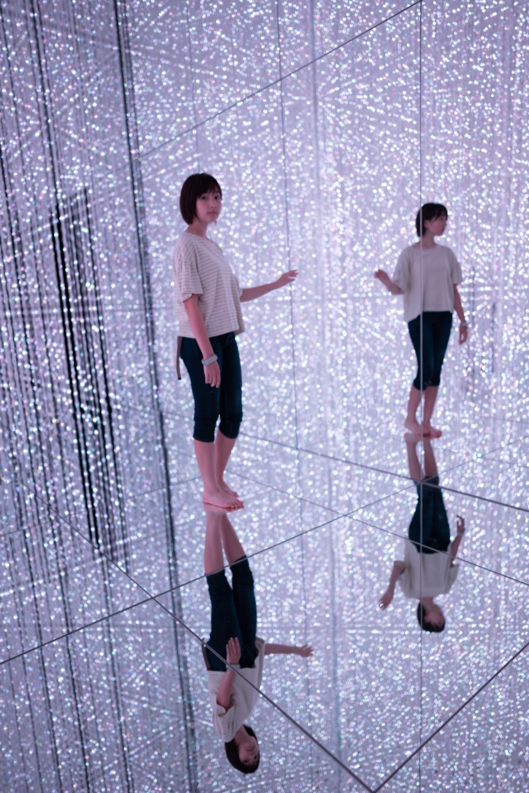
TeamLab PlanetsBarefoot mirrored light & water rooms in Toyosu — this is the place. (Photo: Wikimedia Commons) Optional
Nearby🤖 Odaiba — Gundam statue + malls
Toyosu sits right by Odaiba — a couple of Yurikamome stops on: the life-size Unicorn Gundam statue (DiverCity), waterfront malls, and the Miraikan science museum. Easy kid add if TeamLab finishes early.
 Unicorn GundamThe ~20 m robot statue standing outside the DiverCity mall — it transforms on a light show at night. (Photo: Wikimedia Commons)
Unicorn GundamThe ~20 m robot statue standing outside the DiverCity mall — it transforms on a light show at night. (Photo: Wikimedia Commons)Heading to Harajuku instead? Skip Odaiba and go straight to lunch + shops.
12:30
🍽️ Lunch (wife + kids)
- VEGAin Soph. — fully vegan café (Ginza / Shinjuku / Ikebukuro branches); pancakes, burgers, bento. ⚠️ book ahead. ain-soph.jp
- SAFEHarajuku café / depachika — lots of veg-friendly cafés around Omotesandō; show the veg card.
13:30
🛍️ Harajuku & Takeshita Street — crepes, character shops, sneakers (wife + kids)
15:00
🛒 Don Quijote + drugstore run (viral snacks · skincare · pharmacy)
Don Quijote (Donki) — the 7-floor Shibuya mega-store, open 24/7: viral snacks, KitKats, cheap cosmetics, souvenirs. Pair with any
Matsukiyo / Ainz&Tulpe for the skincare list + the digestion/constipation supplements you saved.
- SKINYour full skincare + haircare list — Melano CC, Hada Labo, Fino, etc. (Part 11 — bring the shelf photos).
- 💊 GUTDigestion / constipation picks — Strong Wakamoto (gut support) · Daichi Kampo Benpiyaku (herbal, mild–moderate) · Colac II (4+ days) · Kyobashu Mg Oxide (osmotic). ⚠️ ask the pharmacist; gelatin caps may not be veg.
 Must-visit storesDonki · Uniqlo · GU · Loft · Hands · Pokémon · ABC-Mart · Onitsuka.
Must-visit storesDonki · Uniqlo · GU · Loft · Hands · Pokémon · ABC-Mart · Onitsuka.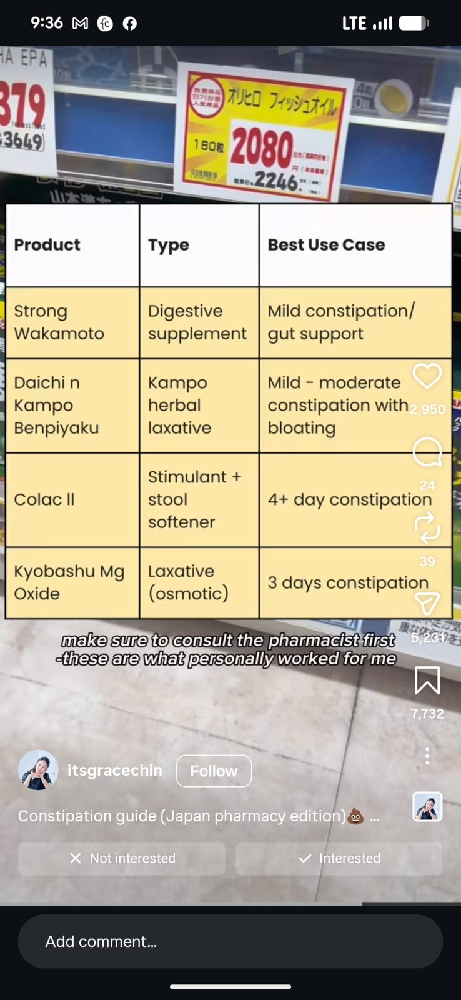
Pharmacy picksWakamoto · Benpiyaku · Colac II · Mg Oxide.
17:00
🚆 Dad joins → Akihabara (electronics · cameras · watches · games)
Regroup at
Akihabara (JR Yamanote, ~15 min from Harajuku/Shibuya). A/C megastores, open late.
🟩 TAP SUICAJR Yamanote~15 min~¥170
17:30
📷 Akihabara big-box + retro games (your buy list)
⚠️ Confirm every appliance is 100–240V dual-voltage before buying — Japan runs 100V.
- TECHYodobashi Camera Akihabara — 9 floors: Sony cameras/headphones, Nintendo Switch, Seiko/Casio/Citizen watches. Also stocks ReFa beauty tools. 📍 Maps: "Yodobashi Akihabara"
- GAMESSuper Potato · Mandarake — retro games / anime for the kids & collectors, along Chūō-dōri.
- SHOESNippon Made (Onitsuka premium) — the top-craftsmanship line; flagship at Tokyo Midtown Yaesu (by Tokyo Stn, one Yamanote hop) — detour only if you want the premium pair.
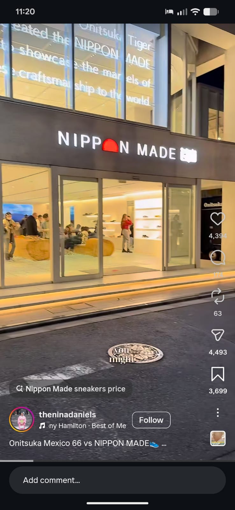
Nippon MadeOnitsuka's premium line · Midtown Yaesu. Store-hours cheat-sheetDonki · Uniqlo · Loft · Onitsuka · Pokémon · Hands · GU · MUJI.
Store-hours cheat-sheetDonki · Uniqlo · Loft · Onitsuka · Pokémon · Hands · GU · MUJI.
Optional · late
Adult-leaning🦖 Shinjuku by night — Godzilla head + Omoide Yokocho
If energy allows, hop to
Shinjuku (Yamanote, ~20 min) for the neon.
Godzilla head: at
Hotel Gracery Shinjuku (Toho Building, Kabukichō) — take the lift to the
8th-floor Godzilla Terrace (free, wraps the café entrance), or grab a drink at the 8F
Bonjour café for the close-up. A 2-min walk away:
Omoide Yokocho lantern alleys and
Golden Gai tiny-bar lanes —
nightlife / yakitori, adult-leaning; walk through at dusk for the vibe, don't plan to eat (mostly meat/skewers).
🟩 TAP SUICA→ Shinjuku (Yamanote)~20 min
 Golden GaiTiny-bar lanes — walk-through at dusk.
Golden GaiTiny-bar lanes — walk-through at dusk. Atago Jinja"Stairs of Success" (Kamiyachō, daytime).
Atago Jinja"Stairs of Success" (Kamiyachō, daytime).Kids fried? Skip — head to dinner near the JW. Godzilla keeps for next time.
19:30
🍽️ Dinner near the JW (or Indian on the way back)
- VEGObica Mozzarella Bar (Takanawa) · Equal Café (NEWoMan, behind JW). 📍 Maps: "Obica Takanawa"
- INDNirvanam (Toranomon, vegan section) or Dhaba India (near Tokyo Stn, veg thali) — short train. 📍 Maps: "Nirvanam Toranomon"
Tomorrow may be Fuji — check the webcam tonight.
Day 11 · Friday
July 17
Mt Fuji / Kawaguchiko 🗻
Sleep: JW Marriott Tokyo
Carry today: Suica ×4 · Fuji Excursion tickets, cars 1–3 · ~¥10,000 cash · veg card · hats + water · Master Sheet · go/no-go on Fuji webcam first
Day 11 — Fri Jul 17 · Mt Fuji day trip (weather-dependent)
Headline: ⚠️ Only go if Fuji is actually visible — July is the haziest season and people burn a day seeing nothing. Check a live Fuji webcam + Windy the night before and that morning. Swap with Jul 16 (the TeamLab/shopping day) if that day looks clearer — DisneySea's Jul 15 date is fixed.
Night + dawn
🌦️ Go / no-go call
Check a live Fuji webcam + Windy the night before and at dawn. If socked in → do a Tokyo flex day instead, no regrets. July is the haziest season.
05:45
🍳 Very early breakfast / grab-and-go
The 06:00–09:00 window has the best odds before haze builds. Pack snacks.
07:00
🚆 Fuji Excursion express: Shinjuku → Kawaguchiko
Get to
Shinjuku first (JR from Shinagawa, ~20 min).
⚠️ Reserve cars 1–3 ONLY — the train
splits at Ōtsuki, the rear goes to Matsumoto (wrong prefecture!). Confirm the car destination before boarding.
(Shinjuku is a maze — pad 20 min, note your platform.)
🟥 BUY (reserve ahead)Fuji Excursion Ltd Express~2 h~¥4,000/adult · weekend seats sell out
09:30
🗻 At the lake — Kawaguchiko
Lake views, ropeway,
Ōishi Park (Fuji + flowers), boat. Get around on the retro
sightseeing buses from Kawaguchiko Station.
⚠️ Red/Green/Blue loops look alike — check colour + direction on the signboard before boarding.
🟩 TAP SUICA / cashSightseeing bus loops~¥1,500 day pass
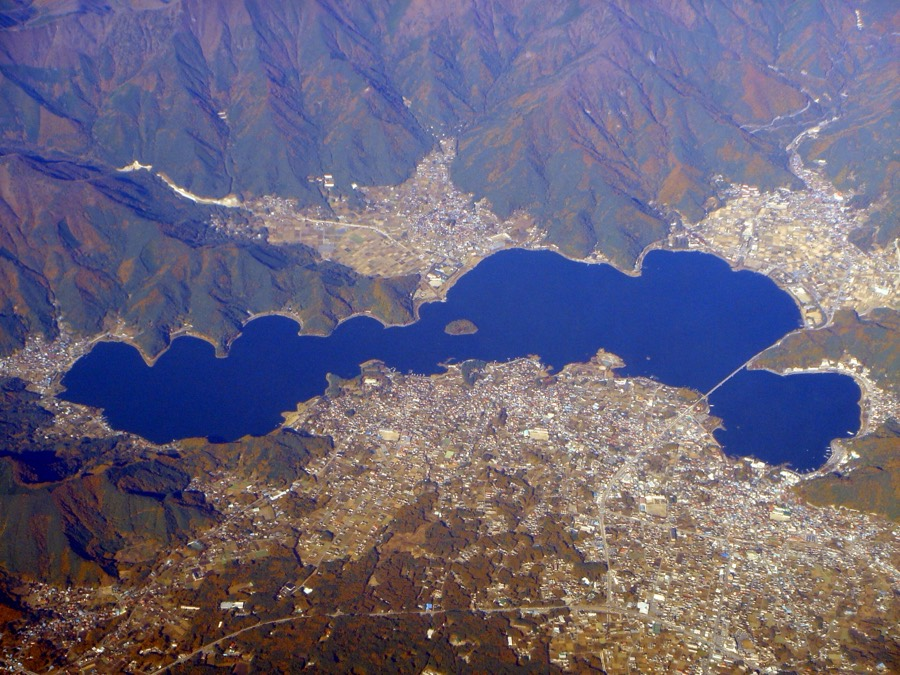
KawaguchikoLake with Mt Fuji rising behind it — the classic Fuji view (clearest early morning). (Photo: Wikimedia Commons)
Optional
Add-on⛩️ Chureito Pagoda (the classic shot)
⚠️ ~400 steps in the heat — hard with a 6-year-old.
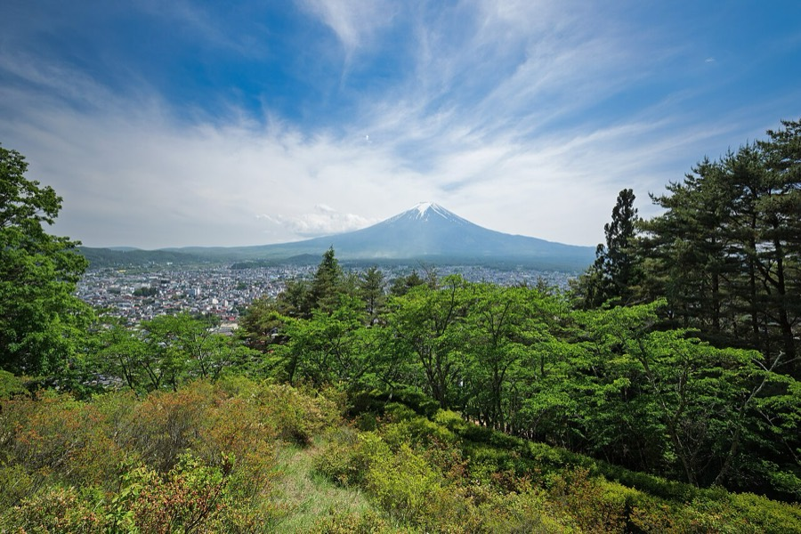
Chureito PagodaThe five-storey red pagoda on the hillside with Mt Fuji behind — the postcard shot (up ~400 steps). (Photo: Wikimedia Commons)Too much with kids? Skip it — the lakeside Fuji views are the payoff anyway.
12:30
🍽️ Lunch near Kawaguchiko Station
Your picks are all a short walk W of the station (bags-free, hands-free).
- VEGShaw's Sushi Bar & Dining — has a dedicated vegan plate. 📍 Maps: "Shaw's Kawaguchiko"
- VEGVegan Nation — burgers, W of the station. · Fuji Tempura Idaten — veg tempura, further W. 📍 Maps: "Vegan Nation Kawaguchiko"
- SAFEPacked snacks + konbini — reliable backup for the kids. ⚠️ local Hōtō noodles are usually meat/dashi broth — skip unless confirmed veg.
Evening
🍽️ Easy dinner back in Tokyo
Head back mid/late afternoon (Fuji Excursion Kawaguchiko→Shinjuku, tap Suica onward). Your
near-JW block:
- VEGObica Mozzarella Bar (Takanawa) · Equal Café (NEWoMan, behind JW). 📍 Maps: "Obica Takanawa"
- INDNirvanam or Dhaba India — veg thali, short train. 📍 Maps: "Nirvanam Toranomon"
Start light packing tonight — you fly tomorrow.
Day 12 · Saturday
July 18
Fly home — AI357
Depart Haneda ~11:50
Carry today: all 4 passports · AI357 boarding info · Suica ×4 (spend down) · tax-free purchases (may be checked) · Master Sheet
Day 12 — Sat Jul 18 · Departure ✈️
Headline: AI357 departs Haneda late-morning (~11:50) — and Haneda is only ~20 min from the JW, so the morning is calmer than most departure days. But an international flight + 4 people = leave enough margin.
07:00
🍳 Breakfast, final pack, checkout
Ask the JW to arrange a taxi/van big enough for 4 + luggage. ⚠️ Confirm AI357's exact time on your ticket and check the onward Delhi→Bangalore connection.
08:15
🚕 JW → Haneda Terminal 3
Taxi is easiest with 4 bags (ask the JW to arrange a van). Or Keikyu from Shinagawa/Takanawa Gateway.
Be at Haneda by ~08:45–09:00 — ~3 h before an international departure.
Taxi (easiest w/ bags)~20 min~¥6,000–8,000
09:00
✈️ Check in, bag drop, immigration (T3)
Air India departs Haneda Terminal 3. Veg meal: you pre-ordered — ⚠️ reconfirm; still grab safe backup snacks for the kids.
10:00
💴 Spend down leftover cash & coins (airside)
The airport won't exchange coins — burn them at konbini/shops on flight snacks & gifts, or dump coins onto a Suica. T3's Edo Koji food street + shops if you're early.
11:50
🛫 AI357 Haneda → Delhi
You made it. Otsukaresama! 🎌
Print this + carry it EVERY day
Master Sheet
Emergencies · veg card · phrases · hotels · money
One sheet, always in your pocket
🆘 MASTER SHEET — carry this every day alongside the day's pages
This is the one page that makes every single-day print safe. It has the numbers, the veg card, the phrases and the addresses you'd otherwise have to flip 70 pages to find. Print it, fold it, keep it on you all 12 days. (Fill the three blanks by hand once you have your bookings.)
☎️ Emergency numbers
| Who |
Number |
| Police |
110 |
| Fire / Ambulance |
119 |
| Nurse triage (English) |
#7119 |
| JNTO Visitor Hotline (24 h English) |
050-3816-2787 |
| Indian Embassy Tokyo — emergency (24 h) |
+81-80-3301-5242 |
| The Westin Miyako Kyoto (to Jul 13) |
___ |
| JW Marriott Tokyo (Jul 13–18) |
___ |
| Travel insurance 24 h line |
___ |
🏨 Hotel addresses (show a taxi / write on kids' cards)
- The Westin Miyako Kyoto — Keage, Higashiyama-ku, Kyoto. (Keage subway 2–3 min; free shuttle from Kyoto Stn Hachijō Exit.) ウェスティン都ホテル京都
- JW Marriott Tokyo — Takanawa Gateway City, Minato-ku, Tokyo. (Above Takanawa Gateway Stn; taxi from Shinagawa ~5 min.)
🥗 Vegetarian card — show at EVERY restaurant
私はベジタリアンです。 I am a vegetarian. Please NO:
肉・魚・魚介類 (No meat, fish, seafood)
卵 (No EGGS)
だし・鰹節 (No fish stock / bonito flakes)
大丈夫です (OK for me): 乳製品 チーズ・牛乳・バター (dairy) ・ 豆腐 (tofu)
野菜だけの料理をお願いできますか？
Can you make a dish with only vegetables (plus dairy/tofu)?
ご協力ありがとうございます。 Thank you for your help.
🗣️ Phrases you'll actually use
| English |
Say it |
| Is there fish stock (dashi)? |
Kore wa dashi ga haitte imasu ka? |
| Does this have egg? |
Tamago wa haitte imasu ka? |
| Vegetables only, please |
Yasai dake de onegaishimasu |
| Dairy & tofu are OK |
Nyūseihin to tōfu wa daijōbu |
| Where is…? |
…wa doko desu ka? |
| How much? |
Ikura desu ka? |
| Excuse me / Sorry |
Sumimasen |
| Thank you |
Arigatō gozaimasu |
| Help! |
Tasukete! |
| I'm lost |
Mayoimashita |
🧒 Kids' ID cards — print ONE PER CHILD, cut out, tuck in each kid's pocket
Two separate cards below (one per child). Each has a Japanese side (for any local who finds them) and an English side (for you / airport / hotel staff). The Japanese is translation-validated. Fill the phone numbers by hand.
───────── ARSHI GUPTA (アルシ・グプタ) ─────────
【日本語】
私は迷子です。名前は「アルシ・グプタ」です。
両親に電話していただけますか。電話番号は下に書いてあります。
お手伝いありがとうございます。
父・母の電話：+91 ____________ / +91 ____________
泊まっているホテル：
・7月13日まで：ウェスティン都ホテル京都
・7月18日まで：JWマリオット・ホテル東京
[ENGLISH]
My name is ARSHI GUPTA. I am lost — please help me.
Could you please call my parents?
Mum/Dad: +91 ____________ / +91 ____________
Staying at: The Westin Miyako Kyoto (to Jul 13)
JW Marriott Hotel Tokyo (to Jul 18)
───────── AVYAN GUPTA (アヴィヤン・グプタ) ─────────
【日本語】
私は迷子です。名前は「アヴィヤン・グプタ」です。
両親に電話していただけますか。電話番号は下に書いてあります。
お手伝いありがとうございます。
父・母の電話：+91 ____________ / +91 ____________
泊まっているホテル：
・7月13日まで：ウェスティン都ホテル京都
・7月18日まで：JWマリオット・ホテル東京
[ENGLISH]
My name is AVYAN GUPTA. I am lost — please help me.
Could you please call my parents?
Mum/Dad: +91 ____________ / +91 ____________
Staying at: The Westin Miyako Kyoto (to Jul 13)
JW Marriott Hotel Tokyo (to Jul 18)
(Japanese meaning, both cards: "I am lost. My name is [name]. Could you please call my parents? The numbers are written below. Thank you for your help." — back-translation-validated.)
💴 Money & IC in one glance
- Carry ¥10,000–20,000/day — Japan is cash-heavy; temples & small shops are cash-only.
- Foreign-card ATMs that work: 7-Bank (every 7-Eleven, 24 h) · Japan Post Bank (post offices + FamilyMart).
- Everyone taps their own Suica on trains/buses/konbini. Top up with cash at any konbini. Shinkansen reserved fare is separate (Smart-EX / paper).
- Lost card? Freeze in the app instantly, then call your bank's India line, fall back to card #2 + cash.
⚠️ Daily reflexes
Meeting-point + outfit-photo before any crowd · live location ON between parents · water every 30–60 min · A/C break every 2–3 h · stand left on Tokyo escalators / right in Kyoto-Osaka · carry your rubbish · no tipping · shoes off in temples.